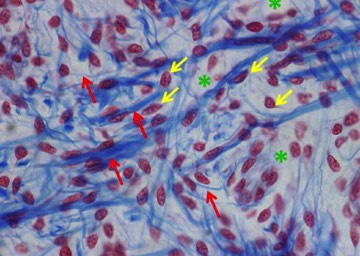

Algemene opbouw van bindweefsels
Heel algemeen bestaan de verschillende bindweefseltypes uit cellen (deze zijn verschillend afhankelijk van het subtype) en intercellulaire of extracellulaire matrix.
Extracellulaire matrix ligt, zoals de naam zegt, buiten (extra-) of tussen (inter-) de cellen en bestaat uit:
- weefselvloeistof
- grondsubstantie: deze bestaat uit vaste componenten, meer bepaald complexe koolhydraten, zoals glycosaminoglycanen en combinaties van eiwitten en suikers, zoals glycoproteïnen en proteoglycanen, waaraan watermoleculen van de weefselvloeistof gebonden zijn
- bindweefselvezels
De bindweefselvezels, glycosaminoglycanen en glycoproteïnen worden door specifieke cellen geproduceerd in elk bindweefseltype en de samenstelling kan aanzienlijk variëren.

Op dit voorbeeld van een bindweefsel zie je celkernen (gele pijlen) en hierrond extracellulaire matrix. Slechts hier en daar is van de cellen het cytoplasma met enkele uitlopers te zien. De bleke achtergrond (asterisken) is de grondsubstantie. De rode pijlen duiden bindweefselvezels aan.
Vordering bindweefsel algemeen: